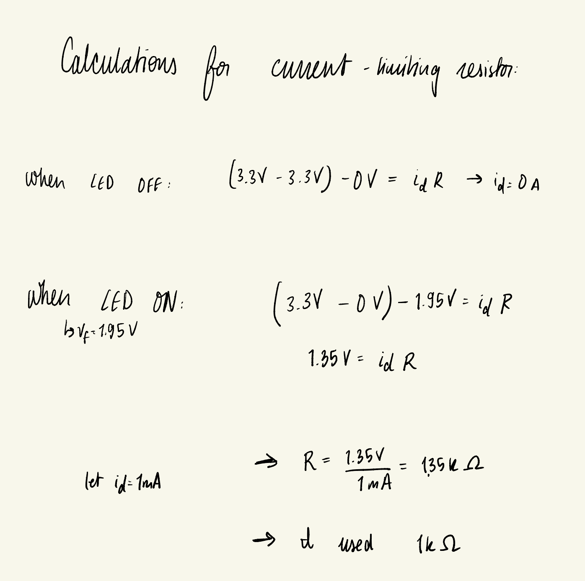

Lab 1: FPGA and MCU Setup and Testing
Introduction
In this lab, a design was implemented on the UPduino v3.1 FPGA to interface with and demonstrate the proper assembly of the E155 Development Board. This lab also exhibited the functionalities of the Dev Board’s LEDs, the FPGA’s on-board high-speed oscillator, and a Seven Segment Display.
Design and Testing Methodology
The iCE40 UltraPlus HSOSC primitive- an on-board high-speed oscillator- was used to generate a clock signal at 48 MHz.
A separate clock divider module was created to divide the HSOSC signal to a frequency of 2.4 Hz using a counter that reset every 10,000 counts. This drove an external LED.
Logic to control the other two on-board LEDs included a simple XOR gate and AND gate between two sets of switches.
To control the input to the Seven Segment Display, a priority encoder was used. The output signals were mapped to their respective pins on the input of the HDSP-511A Seven Segment Display. 3.3V were applied to the common anode of the display. To turn a segment ON, the respective GPIO pin was grounded, producing a 3.3V drop across the segment’s anode. The forward voltage of the segments’ diodes is 1.95V. The current flowing through the diode was chosen to be 1mA. Therefore the value of the current limiting resistor placed in series between the cathode and GPIO pin was 1 kΩ. Calculations for this component value can be found below.

To turn a segment OFF, the respective GPIO pin was set to 3.3V, producing no voltage drop across the segment, therefore allowing no current to flow.
To test this design, all different combinations of the four input switches were tried out, ensuring that each produced the desired segment display and LED-illumination. In testing the frequency of the blinking LED, the number of flashes that occured within 10 seconds were counted. This number- 23 flashes- was divided by 10 to confirm a frequency of 2.4 Hz.
Technical Documentation
The source code for Lab 1 can be found in the following GitHub repository.
Block Diagram
The block diagram above illustrates the lab1_ih design. The top level module is called lab1_ih and takes the input s[3:0] and outputs led[2:0] and segs[6:0], communicating with the GPIO pins. Lab1_ih includes three submodules: the high-speed oscillator block (hf_osc), the seven segments priority encoder (segments), and the clock divider to 2.4 Hz (clock_div).
Schematic

The schematic above illustrates the physical layout on the breadboard. The diode cathodes from the seven segment display were connected in series with a 1 kΩ current-limiting resistor. Similarly, the on-board LEDs required 1 kΩ resistors to their limit current. Internal 100kΩ pull-up resistors were used to keep the active low SW7 from floating.
Results and Discussion
This design met the intended objectives. All switches perform the intended logic, as can be demonstrated on the board by performing all switch combinations. A testbench simulation to verify the SystemVerilog design was not provided for this lab. This was a missing component of this project.
Conclusion
The design successfully blinked an external LED using the on-board high-speed oscillator. Doing so demonstrated that the development board was properly assembled. I spent a total of twenty hours working on this lab.
AI Prototype Summary
The prompt that I provided the LLM was: “Write SystemVerilog HDL to leverage the internal high speed oscillator in the Lattice UP5K FPGA and blink an LED at 2 Hz. Take full advantage of SystemVerilog syntax, for example, using logic instead of wire and reg.”
In response, it provided me with the following:
// Blink an LED at ~2 Hz using the iCE40UP5K internal HFOSC.
// Toolchains: Lattice Radiant/iCEcube2 or open-source (yosys/nextpnr-ice40).
module up5k_led_blink_2hz (
output logic led_o // drive your LED pin (active-high assumed)
);
logic clk_12mhz;
SB_HFOSC u_hfosc (
.CLKHFEN (1'b1), // enable output (assert after 100 µs PU time)
.CLKHFPU (1'b1), // power-up oscillator
.CLKHF (clk_12mhz)
);
localparam int unsigned F_CLK_HZ = 12_000_000;
localparam int unsigned F_BLINK_HZ = 2;
localparam int unsigned TICKS_PER_TOGGLE = F_CLK_HZ / (2 * F_BLINK_HZ);
localparam int COUNTER_W = $clog2(TICKS_PER_TOGGLE);
logic [COUNTER_W-1:0] tick_cnt /* synthesis preserve */;
always_ff @(posedge clk_12mhz) begin
if (tick_cnt == TICKS_PER_TOGGLE-1) begin
tick_cnt <= '0;
led_o <= ~led_o; // toggle at 2 Hz
end else begin
tick_cnt <= tick_cnt + 1;
end
end
initial led_o = 1'b0;
endmoduleWhen I attempted to synthesize this design, I thrown the error “instantiating unknown module SB_HFSOSC. VERI-1063”. I typed the error message back into the LLM, and it corrected itself by instantiating the module “SB_HFOSC”. The LLM had falsely named the Lattice iCE40/UP5K primitive of the on-board FPGA.
I would overall rate the quality of the output poorly. I used ChatGPT 5 for this task, and would have expected it to not make such a basic and obvious mistake. The prompt asked to produce a very simple design, so I found it surprising that the LLM’s output didn’t synthesize on the first try. I also found the mistake surprising, because there should be a correlation between “iCE40/UP5K” and “SB_HFOSC”, rather than “SB_HFSOSC” in the data that the chatbot used to create its answer.
Otherwise, the logic that the LLM created made sense, and the chatbot attempted to use local parameters and calculations to arrive at values necessary for the clock division. This makes the design modular.